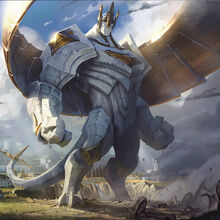
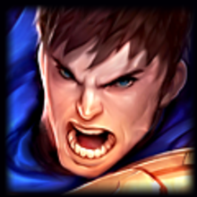
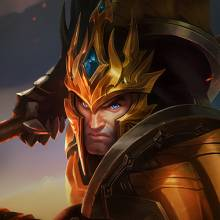
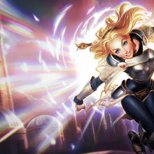

Reino de Demacia
Este podria ser uno de los reinos mas extraños de todo Runaterra, ya que es el unico reino que rechaza cualquier tipo de magia. Este reino se formo por un grupo de supervivientes a las Guerras Runicas, un evento cataclismico que arraso con gran parte de Runaterra y una de sus cosas mas caracteristicas, es la petricita, un material capaz de absorver la magia. Esta gobernado por Jarvan III, un rey benevolente pero temeroso, confiando en que su hijo adquiera la madurz suficiente para que un dia este le pueda suceder y decida el destino del reino en su constante lucha contra la magia y la eterna rivalidad con Noxus.
Algunos de sus campeones mas importantes de Demacia son:
|  |  |  |  |
|---|